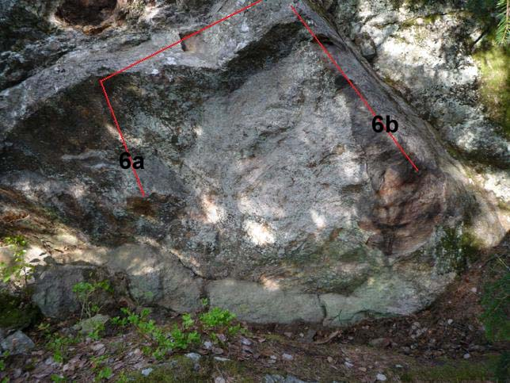

Orhem
GPS: 59.24333794536158,18.15167784690857
ÖVERSIKTSKARTA
Media
-
- Great Orme
- 7b
- Teknisk väggklättring. Förstabestigaren slutade inte på juggen
Kolonin: John klättrar "
Pojkarnas Brigad
".
Kolonin: Martin klättrar "
Allemansarêten
", "
Småborgaren
" och "
Knutna Nävar
"
Christer klättrar
Bortre väggarna: Fredrik klättrar "
Karatekid i Knarkarkvarten
".
Bortre väggarna: Andreas klättrar "
Rune
" och "
Kalsongfjong i Knarkarkvarten
".
Bortre väggarna: Andreas klättrar "
Natterbjudande
" och "
All I need
".
Bortre väggarna: Andreas klättrar "
La fissure de la Foret
".
Bortre väggarna: Andreas klättrar "
La fonderie assis
".
Vägklippan
Highball med stort H helt ok landningar förutom det vänstra problemet då du troligen drar ner i hyllan om du faller. Väggen ligger precis vid vägen på vänster hand efter lilla parkeringen där två handikapparkeringar finns.

- 1
- Den onde
- 6c+
- Hoppas du är bra på gaston
- 2
- Den gode
- 6c+
- Går ihop med den onde på slutet
- 3
- Hit och dit
- 6c-7a
- Upp till hålet sen kan du gå vänster eller höger eller rakt upp du bestämmer
- 4
- Den fule
- 7a
- Skulle kunna vara en led
Christers vägg
Lång vägg med ett femtiotal problem med mestadels utmärkta landningar.
Vägbeskrivning
: Från parkeringen, följ hälsans stig norrut i 3-5 minuter. Efter en utförsbacke hamnar du i en svacka med en brant uppförsbacke framför dig - följ då stigen in till vänster. Du är då efter 25 meter vid Vänstra väggen. Det går även att bröta sig genom skogen från bilvägen men Hälsans-stigalternativet är till och med barnvagnsvänligt.
. Det finns även en del problem o FA-info i
som kan vara värda att lägga till. Var så god!!!!
Övre väggen
-
- Teamwork
- 4+
- Följ diagonalsprickan till toppen
- 1
- Först igen
- 4+
- Väggpartiet till vänster om stora sprickan. röd linje
- 4
- Walk in the park
- 6b
- blå linje
Vänstra väggen
- 7
- Hangover of Rolf
- 5-
- Sittst. i undercling och rakt upp. Röd linje.
- 8
- Pillar
- 5
- Sittst. till v. om sprickan och rakt upp. gul linje.
- 9
- If you need crack
- 5
- Sittst. och upp i stora sprickan.
-
- And if you dont
- 5
- Sittst. rakt under "If you need crack's" utsteg och rakt upp
- 10
- Crimp it
- 6a+
- Sittstart i brevlådan och rakt upp. Grön linje.
- 11
- Statisk skåning
- 6a
- Sittst. till v. om sprickan, h.hand i sidotag i sprickan och rakt upp. Blå linje.
Sandhålsväggen
- 12
- Pinch my nopple
- 6a
- Sittst. på areten och upp mot roten. Lila linje.
- 13
- Perca fluviatilis
- 6b
- Start med vänsterhand i koppen under minisprickan och upp snett till höger. Gul linje.
- 14
- steeler
- 6a+
- Röd linje. sittstarta?
- 15
- I´am a sendin man
- 6b
- Sittst. i högra sprickan, v/h.hand upp till list och vidare till toppen. Grön linje. Obs: grepp har lossnat i sittstarten.
- 16
- Monkey
- 5+
- hang Sittst. i flakets högra del, travers vänster och upp. Blå linje.
Vertikalväggen
- 18
- Strimmelfinger
- 6a+
- Sittstart i brevlådan och rakt upp. Gul linje.
-
- The crippler
- 6b+
- Sittstart i v:et ,upp till tvärsprickan och vidare rakt upp
- 19
- Flash Gordon
- 6c
- Rakt genom grytan på små grepp.
- 21
- Bullen
- 4+
- Start på "blå" listen under bullen och rakt upp. röd linje.
Stora överhänget

- 26
- Red head
- 7a+
- Fortsättningen på teen. Toppar ut lite åt vänster.
- 27
- Teen
- 6b
- Rakt upp på goda grepp. Slutar på Juggen.
- 28
- Sinus
- 6b+
- Travers åt höger ifrån tvärsprickans början bort till abundance (karmaväggen).
- 30
- Mature
- 6c
- På det höga partiet till höger om Teen
Karmaväggen

-
- Emmies tofflor
- 5
- St. på orange grepp och upp till vänster
- 31
- Venus as a Toy
- 6a+
- Rakt upp i mitten av grytan
- 32
- Abundance
- 6b
- St. på gult grepp och upp till h. om lilla enen på toppen
- 33
- Bad karma
- 6b+
- Hopp till taggiga greppet och upp. Gul linje.
- 34
- Bad karma
- 7b
- sitstart. Gulstreckad linje.
- 35
- Good karma
- 6c
- Sittstart. ''Tror'' att det är röd linje upp.
Chipväggen

- 36
- Till förruttnelsen
- 7a+
-
- 37
- Johnas spricka
- 6b
- Vänstra sprickan. Start i bra grepp, upp i överhäng o sedan sprickan till svaet.'Gul linje.
- 38
- Fossil
- 7a+
- Högra sprickan. Röd linje.
- 39
- Gnome
- 7b+
- Från tvärsprickan upp till halvmånen och rakt upp. Turkos linje.
- 40
- Driller killer
- 7b
- Halvmånen sen höger ut till sneda listen och rakt upp. Grön linje.
- 41
- Kanske utan Hilti
- 7a+
- Från högra delen av tvärsprickan upp till sneda listen och rakt upp. Lila linje.

-
- Tjuven
- ?
- Sittst. v.hand i litet sidotag och h.hand i låg list på hyla. Avsluta med Jonnas klätterträd. Röd streckad linje.
- 42
- Jonnas klätterträd
- 6a
- Travers med st. vid längs tvärsprickan och upp i dess slut. Röd linje.
-
- Get shorty
- 4+
- Sittst. till höger om pyttelilla trädet och rakt upp
-
- Revenge of the gremlins
- 5-
- Sittst. direkt h. om #10 med start på slopers
Skogsväggarna
Någon med BBB3-ticklistan borde kunna fylla i lednamn nedan.
Klippa närmast vägen.

Högbollarna


Parkeringväggarna
Fyll i problemen namn o grader!


- 1
- Din mamma
- 6(?)
- Sittstart nere till höger om graffitin, skicka högerhanden till crimp rakt upp, traversera över graffitin och sluta på jugge uppe till vänster.

Bortre väggarna
Översiktskarta
Vägbeskrivning:
Från parkeringen i slutet på Orhemsvägen, passera vägbommen och fortsätt ca 300 meter. Passera Unga Örnar och fortsätt rakt fram på vägen ca 400 meter till. När vägen gör en krök ser man ett stenrös på höger sida, samt en stig som går in till höger. Passera stenröset och klipppartiet och vik sedan av åt höger från vägen. Uppvärmningsväggen [1] ligger ca 50 meter in och vetter mot vägen.
1. Uppvärmningsväggen
- 1a
- Mläh
- 3
- Ståstarta, gå rakt upp längs bra grepp.
- 1b
- Sanäh
- 5
- Sittstarta lågt.
- 1c
- Senseless stereotyped idea
- 5+
- Sittstarta lågt i horisontella sprickan, lås av och sträck.
- 1d
- Mfäh
- 6a
- Sittstarta på det stora greppet m vh och lite skröfs för hh och catcha upp åt höger.
2. Knarkarkvarten
Väggen ligger uppe på branten ovanför gläntan bakom uppvärmningsväggen.
- 2a
- namn?
- 6c(?)
- Sittstart på vänstra areten, snett upp åt höger.
- 2b
- Karate kid i knarkarkvarten
- 7b+ (7c)
- Sittstart på undercut flak, snett upp åt höger.
- 2c
- Kalsongfjong i knarkarkvarten
- 6c (7a)
- Låg sittstart till vänster om diedern, gå åt vänster och upp.
- 2d
- Natterbjudande
- 6c+
- Samma start som ""Kalsongfjong"", gå rakt upp. Ståstart 6c.
- 2e
- All I need
- 6a+
- Samma start som ""Kalsongfjong"", gå åt höger och upp. Ståstart i jug på bullen 6a.
- 2f
- 10 rosor direkt
- 5+
- Ståstart mitt på bullen, gå rakt upp.
- 2g
- 10 rosor
- 5+
- Ståstart mitt på bullen, gå åt höger och upp, tveksam landning.
3. Överväggen
Väggen ligger snett ovanför Knarkarkvarten och rakt ovanför rampväggen.
- 3a
- Mnäh
- 5
- Sittstarta och knöla dig upp på bullen.
- 3b
- Asäh
- 5
- Ståstarta sprickan, upp till hylla, toppa ur åt vänster
- 3c
- namn?
- grad?
- Linjen mitt på fejset.
- 3d
- namn?
- grad?
- Ståstarta den trubbiga areten och upp längs slopig ränna.
- 3e
- Kwäh
- 6a
- Ståstart på bra grepp bakom tallen, upp till jugg, toppa ur åt höger. Variant åt vänster.
4. Rampväggen
Vägg nedanför Överväggen.Sluttande landning.
- 4a
- Fyrminus
- 5-
- Balansera ut åt höger längs rampen med händerna på seglet.
- 4b
- projekt
- grad?
- Start på bra grepp på högra areten, dyna upp åt vänster till slot på slabben.
5. Andreas Slabb
Från Uppvärmningsväggen, följ liten stig ca 50 m syd-sydost.
- 5a
- Rune
- 7a
- Klurig slabb á la Spångberg.
6. Alkovväggen
Väggen finns på liten stig mellan Andreas Slabb och Fissurväggen. Den är något dold bakom en sten.

- 6a
- namn?
- grad?
- Ett par linjer som går att utveckla och/eller roa sig på...
- 6b
- namn?
- grad?
- Ett par linjer som går att utveckla och/eller roa sig på...
7. Fissurväggen
Väggen nås enklast från stora vägen. Vid stenröset, tag stig in till höger, gå ca 100 m. Fissurväggen ligger uppe på branten till vänster och nås via en passage.
- 7a
- namn?
- 6b
- Ståstart längst till vänster.
- 7b
- La fissure de la Foret
- 7a+
- Ståstarta sprickan. variant till vänster på slabbdelen finns.
- 7c
- projekt
- grad?
- Mitt på fejset till höger om sprickan.(?)
- 7d
- La serieux assis
- 7b
- Sittstarta, upp till hylla, toppa ur åt vänster på slabb. Highball. Ståstart 7a+(?).
- 7e
- La fonderie assis
- 7a+
- Sittstarta, rakt upp. Ståstart 7a(?).
- 7f
- Gretas trosa
- 6c
- Ståstart mellan "La fonderie" och "Forellfrisyren".
- 7g
- Forellfrisyren
- 6a+
- Sittstarta den trubbiga areten vid björken. Upp längs slopiga hyllor.
Sjöväggarna
Vägbeskrivning:
Följ samma väg som mot Bortre väggarna, men fortsätt så att du kommer runt sjön. Sjöväggarna hittar du på höger sida av vägen strax efter att vägen delat av sig mot Flatens Skogsväg.
1. Låga sjöväggen
- 1
- La Tour Eiffel
- 6-
- Sittstart, gå rakt upp längs sprickan.
- 2
- Boob Job
- 5
- Sittstart, gå rakt upp på bullen. Ej stenblocken ovan och på sidorna! Flicka demonstrerar en sittstart på Boob job

- c
- Flöte
- 5-
- Upp och lite till höger därefter rakt upp!
- d
- Namnlös
- 6b
- Starta vid Uno, ut vä och upp på små crimps
2. Höga sjöväggen
Kolonin
Översiktskarta
Vägbeskrivning:
Kör Orhemsvägen ca 150m förbi avfarten Gebersvägen (busshållplatsen). Parkeringen, omringad av stockar, ligger på vänster sida och har en skylt som det står ”2 Handikapplatser” på. Till Servitutväggen kommer man enklast genom att gå stora stigen (skyltat ”Flaten runt” och ”Ekudden 2km”) och svänga av vänster vid hagen med badkaret. Servitutväggen ligger ca 30 m från stora stigen. De andra väggarna hittar man genom att följa de små stigarna enligt kartan.
1. Överklassen
Väggen ligger ca 50 meter från parkeringen. Gå rakt in i skogen och håll något höger.
- 1a
- Projekt (arbetsnamn Babel)
- ???
- High-ball projekt med intressant landning.
2. Friggebodarna
En handfull low-balls. Väggen ligger uppe till vänster om Överklassen från parkeringen sett, första problemet du kommer till är Birgit.
- 2a
- Stugknuten
- 5-
- Fristående liten vägg, sittstarta med händerna på var sida om areten.
- 2b
- Småbåtshamn
- 6a+
- Sittstart vid seglet/rampen.
- 2b
- Småbåtshamn höger
- 7a
- Start som Småbåtshamn, upp till läppen o sen höger via sloopers till Vformad krimp mitt på svaét.
- 2c
- Löneklyftan
- 5
- Liggstart med händerna till vänster, mantling i klykan, utsteg vänster eller höger. Variant: starta med händerna till höger 5+.
- 2d
- Myrdal
- 6a+
- Sittstarta den trubbiga areten.
- 2e
- Palme'n'knee
- 5-
- Sittstart, upp till vänster om trädet.
- 2f
- Birgit
- 3-
- Ståstart på lätt slabb. Projekt: Birgit hands off (no hands).
3. Buken
Fristående, runt block i sluttningen. Nås enklast genom att från parkeringen runda berget på vänster sida.
- 3a
- Hoppa späck
- 5+
- Sittstart.
4. Marginalskatten
Från parkeringen, följ stigen till vänster om berget, förbi Buken. Marginalskatten ligger uppe på höger sida. Etablerade problem finns uppe på den lilla avsatsen, till höger finns ett par oborsta linjer.
- 4a
- Inget att spotta på
- 6a+
- Sittstart uppe på avsatsen, rakt upp.
- 4b
- Sven kan inte ha fina saker
- 6a
- Sittstart uppe på avsatsen, runda höger arête.
5. Grådvärgsattack
Passera längs Marginalskatten och över branten (ca 80 meter), sväng höger nere i sänkan. Väggen är något dold bakom granar.
- 5a
- Ingen jävla fyrminus
- 4
- Sittstarta på tydliga greppet, upp via jug till höger.
- 5b
- La sauter de la Forêt
- 5
- Sittstarta på tydliga greppet, dyna direkt till toppen. Variant: dyna med vänsterhanden eller båda händerna.
6. Servitutväggen
Väggen nås enklast genom att följa stora stigen från parkeringen och svänga vänster in i skogen vid hagen med badkaret.
- 6a
- Allemansarêten
- 5+
- Ståstart.
- 6b
- Knutna nävar
- 6b+
- Sittstart mitt på väggen.
- 6c
- Småborgaren
- 6a+
- Sittstart med höger hand i sidosprickan.
- 6d
- Pojkarnas Brigad
- 7b
- Sittstart på högra delen av väggen. Låt bli att ta det övre högerflaket. Det sitter löst o risken finns att startgreppet följer med om det ryker. Dessutom behövs det inte för att göra problemet.
Kategori:Stockholm
Copyright (C) Permission is granted to copy, distribute and/or modify this document under the terms of the GNU Free Documentation License, Version 1.3